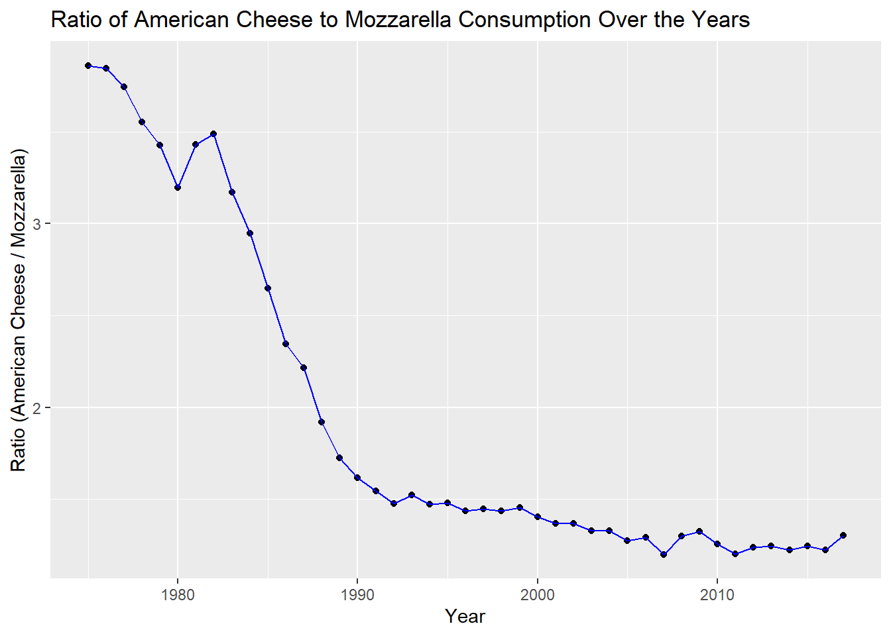
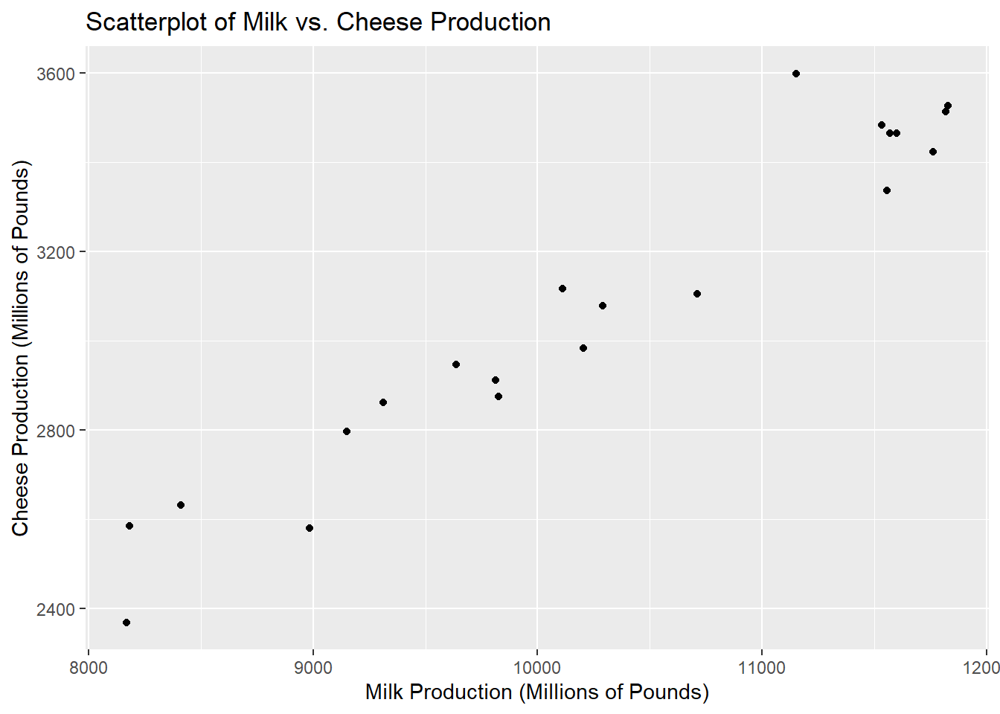

In the previous section, we explored a basic line plot using the ggplot2 package in R. We visualized the ratio of American Cheese to Mozzarella consumption over the years with a simple line and point plot. Here’s the code for the previous plot:
ggplot(merged_data, aes(x = year, y = ratio)) +geom_point() +geom_line(color ="blue") +labs(x ="Year",y ="Ratio (American Cheese / Mozzarella)",title ="Ratio of American Cheese to Mozzarella Consumption Over the Years" )

The power of data visualization is crucial in the field of data analysis and exploration. It allows us to gain insights from data, identify patterns, and convey complex information in an understandable manner. ggplot2, a popular data visualization package in R, is a versatile and powerful tool for creating a wide range of plots and graphs.
What sets ggplot2 apart is its unique layering system, which allows you to add different components to a plot in a structured and modular way. Layers enable us to build complex and informative visualizations by adding various elements to our plots, such as multiple data series, labels, titles, and more.
As an example, we can present the earlier plot in the following manner:
ggplot(merged_data, aes(x = year, y = ratio)) +geom_point(size =2) +geom_line(color ="blue", linewidth =1) +geom_smooth(method ="lm", formula = y ~poly(x, 2), se =TRUE, color ="red") +labs(x ="Year",y ="Ratio (American Cheese / Mozzarella)",title ="Ratio of American Cheese to Mozzarella Consumption Over the Years",subtitle ="Plot with Regression Lines",caption ="Data source: GitHub" ) +theme_minimal()
Here’s a quick breakdown:
Data and Aesthetics (ggplot):
We start with the ggplot function, specifying the dataset merged_data and aesthetic mappings. The x-axis represents the “year,” and the y-axis represents the “ratio.”
Scatterplot (geom_point):
The geom_point layer is added to create a scatterplot of data points. Each point represents a data entry.
The size parameter is set to 2, making the points larger for better visibility.
Line Plot (geom_line):
The geom_line layer is used to create a line plot. This line connects the data points in chronological order, providing a visual representation of the trend.
The color parameter is set to “blue,” and the linewidth parameter is set to 1 to customize the color and thickness of the line.
Regression Line (geom_smooth):
We’ve added a regression line to the plot using the geom_smooth layer.
The method is set to lm (linear model), indicating a linear regression model.
The formula argument specifies a polynomial regression model (y ~ poly(x, 2)) of degree 2.
The se parameter is set to TRUE, which adds confidence intervals around the regression line, giving an indication of the uncertainty.
The color parameter is set to “red” to make the regression line visually distinct.
Labels (labs):
The labs function is used to add labels and titles to the plot. It provides clarity and context to the visualization.
The x-axis label is “Year”, the y-axis label is “Ratio (American Cheese / Mozzarella)”, the main title is “Ratio of American Cheese to Mozzarella Consumption Over the Years”, the subtitle specifies that this is a plot with regression lines, and the caption attributes the data source to “GitHub”.
Theme (theme_minimal):
Finally, the theme_minimal() function is applied to give the plot a clean and uncluttered appearance. This minimal theme provides a simple background, allowing the data and plot elements to take center stage.
5.1 `ggplot2`` grammar
ggplot2, is built on the foundation of the “Grammar of Graphics.” This framework allows you to create intricate and customized plots by layering different geometric shapes and elements. Understanding the concept of geometry and layering is essential for crafting rich, informative visualizations. We’ll illustrate this concept with some reproducible examples.
Example 1: Scatterplot and Line Plot
In this example, we build a scatterplot and overlay it with a smooth line:
library(ggplot2)data <-data.frame(x =1:10, y =c(1, 3, 2, 4, 5, 7, 6, 8, 9, 10))# Layer 1: Scatterplotscatter_plot <-ggplot(data, aes(x, y)) +geom_point()# Layer 2: Overlay with a Smooth Linescatter_with_line <- scatter_plot +geom_smooth(method ="lm", color ="blue")print(scatter_with_line)
`geom_smooth()` using formula = 'y ~ x'
In this example, we start with a scatterplot as Layer 1, created using geom_point. Then, Layer 2 overlays a smooth line using geom_smooth. This demonstrates how geometric layers can be added to a plot to enhance its depth and insight.
Example 2: Multiple Geometries, layering and Customization
In this example, we combine multiple geometry, layers and customize the plot:
data <-data.frame(x =1:5, y1 =c(2, 3, 5, 4, 6), y2 =c(1, 2, 4, 3, 5))# Layer 1: Line Plot, Layer 2: Bar Chart, Layer 3: Customizationline_plot <-ggplot(data, aes(x)) +geom_line(aes(y = y1), color ="blue", linetype ="dashed") +geom_bar(aes(y = y2), stat ="identity", fill ="lightgreen")customized_plot <- line_plot +labs(title ="Customized Plot with Layers",x ="X-axis",y ="Y-axis" ) +theme_minimal()print(customized_plot)
This example features three layers and two geometries: Layer 1, a line plot (geom_line); Layer 2, a bar chart (geom_bar); and Layer 3, customization with labels and themes. It highlights how ggplot2 empowers you to create multi-layered, tailored visualizations for effective data communication. Lets do this step by step.
5.1.1 Example 1: Building a Scatterplot Step by Step
On this example we will learn how to create a scatterplot with ggplot2 and add layers, geometries, and configurations step by step using simulated dairy cattle production data.
Step 1: Introduction to Data and Aesthetics
library(ggplot2)# Simulated dairy cattle production dataset.seed(123)cattle_data <-data.frame(Year =2000:2020,Milk_Production =runif(21, min =8000, max =12000)) |>mutate(Cheese_Production = (Milk_Production *0.3) +rnorm(21, 0, 100))# Create a ggplot object with data and aestheticsscatter_plot <-ggplot(cattle_data, aes(x = Milk_Production, y = Cheese_Production))scatter_plot

Step 2: Adding the Scatterplot (points) Geometry
# Add the scatterplot geometry using geom_pointscatter_plot <- scatter_plot +geom_point()scatter_plot
Step 3: Adding Labels and Title
# Add labels and a titlescatter_plot <- scatter_plot +labs(x ="Milk Production (Millions of Pounds)",y ="Cheese Production (Millions of Pounds)",title ="Scatterplot of Milk vs. Cheese Production" )scatter_plot
Step 4: Applying a Minimal Theme
# Apply a minimal themescatter_plot <- scatter_plot +theme_minimal()# Display the scatter plotprint(scatter_plot)
5.1.2 Example 2: Exploring Geometries
In this example, we will present different geometric shapes and their application in ggplot2 visualizations.
Example (Bar Plot):
5.1.3 Lesson 3: Adding Complexity with Configuration
Objective: Learn how to configure dairy cattle production plots by customizing colors, legends, and themes.
Content: - Customizing color palettes and fill aesthetics for dairy production data. - Adding legends for color and size. - Applying different themes to plots for a polished look.
Reproducible Example (Color Configuration):
library(ggplot2)# Simulated dairy cattle production datacattle_data <-data.frame(Year =2010:2019,Milk_Production =runif(10, min =8000, max =12000),Cheese_Production =runif(10, min =500, max =2000),Category =rep(c("Category A", "Category B"), each =5))# Create a scatterplot with color and size customizationggplot(cattle_data, aes(x = Milk_Production, y = Cheese_Production, color = Category, size = Year)) +geom_point() +labs(x ="Milk Production (Millions of Pounds)",y ="Cheese Production (Millions of Pounds)",title ="Scatterplot with Color and Size Customization" ) +scale_color_manual(values =c("Category A"="red", "Category B"="blue")) +theme_minimal()
5.1.4 Lesson 4: Faceting for Complex Data
Objective: Understand how to facet dairy cattle production plots for better data exploration and visualization.
Content: - Introduction to faceting with facet_wrap and facet_grid. - Creating subplots to explore dairy cattle data across different categories, such as states. - Customizing faceted plots and applying labels.
Reproducible Example (Facet Wrap):
library(ggplot2)# Simulated dairy cattle production datacattle_data <-data.frame(State =rep(c("California", "Wisconsin", "Texas", "New York"), each =5),Year =rep(2016:2020, times =4),Milk_Production =runif(20, min =8000, max =12000))# Create a faceted bar plot for milk production by stateggplot(cattle_data, aes(x = State, y = Milk_Production)) +geom_bar(stat ="identity", fill ="lightblue") +facet_wrap(~Year, nrow =1) +labs(x ="State",y ="Milk Production (Millions of Pounds)",title ="Faceted Bar Plot of Milk Production by Year" ) +theme_minimal()
This mini-course focuses on dairy cattle production data and gradually introduces key ggplot2 concepts, including geometries, configurations, and faceting, using simulated examples. You can expand on these lessons by exploring more complex dairy cattle production plot types and customizations.
Following this brief introduction, we will explore how to construct the most common types of plots in ggplot2 using the USDA datasets on milk production. We’ll examine the creation of insightful visualizations such as bar plots, line plots, scatterplots, and more, enabling us to gain a deeper understanding of the milk production trends and patterns based on the dataset.
5.1.5 Line Plot
# Filter data for a specific state (e.g., California)milk_data_filtered <- state_milk_production %>%filter(state =="California")# Create a line plot for milk production over the yearsline_plot <-ggplot(milk_data_filtered, aes(x = year, y = milk_produced)) +geom_line(color ="blue", size =1) +labs(x ="Year",y ="Milk Production (Millions of Pounds)",title ="Milk Production in California Over the Years" ) +theme_minimal()
Warning: Using `size` aesthetic for lines was deprecated in ggplot2 3.4.0.
ℹ Please use `linewidth` instead.
# Display the line plotprint(line_plot)
Explanation: - Layer 1 (geom_line): - Generates a line plot using the geom_line function. - The x aesthetic represents the years, and the y aesthetic represents the milk production values. - We customize the line’s color and size using the color and size parameters.
5.1.6 Bar Plot
# Filter data to focus on the top 5 states with the highest milk productiontop_states <- state_milk_production %>%group_by(state) %>%summarise(Total_Milk =sum(milk_produced)) %>%arrange(desc(Total_Milk)) %>%head(5)# Create a bar plot to compare milk production in the top 5 statesbar_plot_top_states <-ggplot(top_states, aes(x =reorder(state, -Total_Milk), y = Total_Milk)) +geom_bar(stat ="identity", fill ="lightblue") +labs(x ="State",y ="Total Milk Production (Pounds)",title ="Top 5 States with Highest Milk Production" ) +theme_minimal()# Display the bar plotprint(bar_plot_top_states)
Explanation: - Layer 1 (geom_bar): - Generates a bar plot using the geom_bar function. - The x aesthetic represents the states (reordered by total milk production), and y represents the total milk production values. - The stat = "identity" ensures the height of the bars corresponds directly to the values.